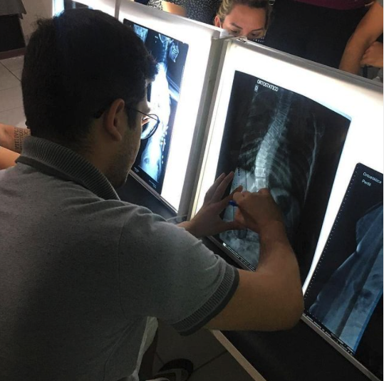

Quando devo procurar ajuda?
Essa é uma dúvida frequente dos pacientes
No caso de lesões e fraturas, o médico fará o encaminhamento para a fisioterapia, logo após o período de repouso. No entanto, em muitas das situações descritas anteriormente, é possível procurar fisioterapeuta especialista para iniciar um tratamento e, sobretudo, a prevenção de um problema. Esse é o caso, por exemplo, dos idosos e das gestantes que buscam ter uma vida mais saudável nas respectivas fases da vida. Ainda assim, o melhor é procurar um médico para se conhecer as causas a fundo e escolher, juntamente com a fisioterapia, a melhor forma de tratamento.


-
 R. Cel Wenceslau Soares, Centro
R. Cel Wenceslau Soares, Centro
 matheusfreirecarv@gmail.com
matheusfreirecarv@gmail.com
 (88) 99801-4042
(88) 99801-4042